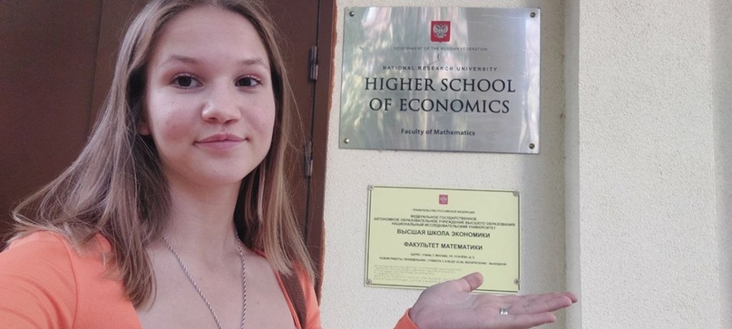
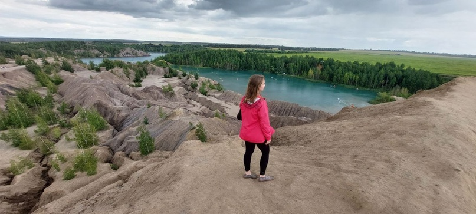
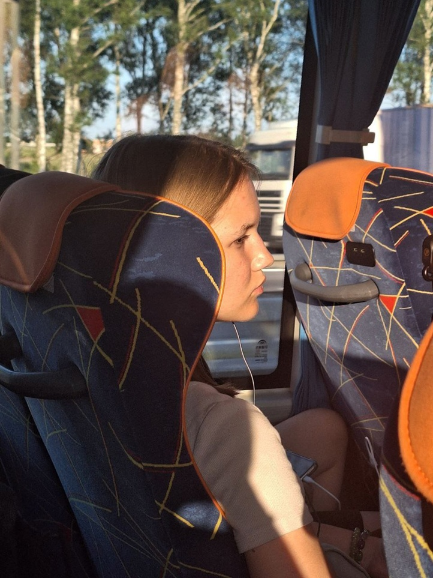
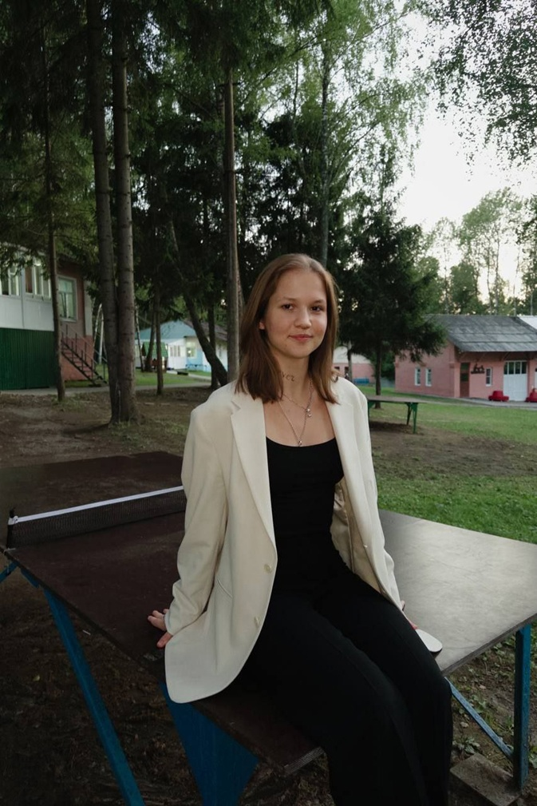
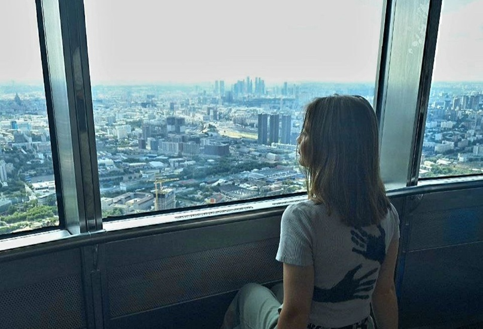

Наши контакты
Телефон: +7(987)654-32-10


Привет, ЛМШ! Мы поздравляем вас с началом нового учебного года! Верим, что он принесёт много новых знаний и достижений. В честь 1 сентября мы подготовили продолжение рубрики #лмш_преподаватели о человеке, связанном со словом «школа» в нашем названии больше, чем кто-либо другой. Речь идет о заведующей учебной частью, Потаповой Анне.
Во-первых, всем привет! Во-вторых, желаю вам плодотворных и, по возможности, безболезненных 34 или 36 учебных недель. Меня зовут Потапова Анна, я студентка, получается, уже 2-го курса факультета математики Высшей Школы Экономики.
Как бы ни было банально, я действительно считаю, что математика – царица всех наук. Но не в том плане, что она выше всех, а в том, что все дороги ведут к ней, она родоначальница. И в моем понимании качественное математическое образование – это база. А то, что оно получится настолько фундаментальным, позволит мне в будущем уйти в классные прикладные и сложные штуки. А ещё мне просто нравилась школьная математика больше, чем другие предметы.
Почему ВШЭ. Вообще, вы могли слышать, что матфак – не Вышка. Студенты нашего факультета живут вдали от суеты «большой Вышки», но при этом могут пользоваться всеми её возможностями и преимуществами. Честно говоря, я повелась, возможно, как и многие, на «бренд», на картинку, а также на многочисленные не негативные отзывы от старших поколений.
На матфаке мы занимаемся разными, часто очень сложными вещами, которые практически всегда тяжело представить. Так, например, моя первая курсовая работа была о неевклидовой геометрии. Если кратко, то в некоторых моделях на плоскости (хочется заменить слово «плоскость» на «поверхность», но это я уже начинаю по-математически душнить и обобщать) через точку, не лежащую на прямой, можно провести бесконечно много прямых, не пересекающихся с данной.
Если вы хотите понять, о чем это, самым красивым теоретическим приложением геометрии Лобачевского я считаю описание физики маленькой плоской вселенной Пуанкаре из его книги «Наука и гипотеза». Работа над данной темой в течение семестра сделала меня ярой сторонницей идеи того, что математика – на одну половину философия, и мне это нравится, а на вторую половину – доказательства на десятки страниц, а вот от этого мне уже не очень хорошо.
В целом, нет, не собираюсь. Но есть одно явление, из-за которого я иногда задумываюсь и дальше развиваться в этом направлении. Существует проект, который называется «Математическая генеалогия», где можно отследить своих научных предков. К сожалению, курсовой работы для этого недостаточно, нужно написать как минимум диссертацию.
С магистратурой сложно. Это будет нескоро, мое решение, уверена, ещё поменяется, но пока я планирую либо что-то экономически-управленческое, либо анализ данных (если мне покорится страшный и прекрасный математический анализ). Есть ещё вариант не идти в магистратуру, его я тоже иногда рассматриваю. Цитируя классика, на мои планы целой эпохи хватит только в обрез. Если говорить о работе и карьере, то думаю о консалтинге, характер этой сферы деятельности, как я её понимаю, мне очень близок.
Я очень люблю читать, буквально черпаю силы из этого процесса. Мечтаю в будущем обустроить полноценную домашнюю библиотеку. Из более вдохновляющего, совсем недавно, в последней смене, я все-таки увлеклась музыкой и сегодня, в день выхода этого интервью, собираюсь приобрести гитару и активно осваивать мастерство игры.
Из долго живущих планов – походы. Трекинговые походы. Это многодневные вылазки в горы. Пару дней назад я сделала первый шаг на пути к этой цели – записалась в турклуб Вышки. Скоро начнутся первые занятия, буду учиться вязать узлы и улучшать общую физподготовку. Если говорить о конкретике, то стремлюсь и мечтаю я совершить переход по пути Сантьяго-де-Компостела. Это маршрут длиной 800 километров по Пиренеям. Только представьте – месяц в пути! Пешком, как и тысячу лет назад, имея с собой только то, что помещается в рюкзак, с людьми, которых ты увидел впервые, и, возможно, больше никогда не пересечёшься.
А если говорить об уже реализованном, то это астрономия. Моя пррррелесть, телескоп, позволяет наблюдать прекрасное ночное небо: луну, звёзды и иногда даже Марс. (Прим. ред. Да, вы верно поняли интонацию) Я очень радуюсь, когда мне удается приобщить кого-то к этим наблюдениям.
Я пала жертвой традиционной ежегодной масштабной агитации в ЕФМЛ. Как звучит наиболее распространенная «история успеха» в ЛМШ, пришёл, увидел, стал желтым. И вот я здесь, в должности завуча.
В первую очередь – всё, что касается учебки: организация подготовки пар, контроль качества их проведения и красочности представления, сбор статистики и фидбэка от детей, консультация и перевод между парами, «распинывание» детей и взрослых на пары, еженощная инвентаризация учебного стаффа и всё прочее, что может прийти в голову при слове «учебка».
Но это не всё. Как выяснилось на практике, вместе с должностью завуча по наследству достаётся и ряд других обязанностей: должность Ревизорро и смотрителя градусника – это делает мою жизнь во время смены гораздо более загруженной, но мне нравится. В течение года я также занимаюсь организацией и подготовкой собеседований. Ну и, разумеется, сама веду пары.
Его нет. Как и не было в моей олимпиадной карьере. В моем портфолио дипломы вузовских олимпиад по математике и физике, региональных этапов ВсОШ по обществознанию, праву, немецкому языку, литературе и даже заключительного этапа по русскому языку. Поэтому при выборе тематики пары я каждый раз разрываюсь, но статистически так получилось, что отдаю предпочтение физмат направлению.
Впечатления самые позитивные, хорошие и приятные. Я невероятно довольна и горжусь тем, как прошли эти 3 недели. В этом году уже были опробованы несколько нововведений, не моего авторства, но под моим руководством. Кажется, всё прошло успешно, и поэтому дальше больше. Из спойлеров ровно одно слово – кафедры.
Сложно. Но мне очень хочется успевать и преуспевать и там, и там, поэтому пока получается. И то, и то – прекрасная строчка в резюме, но ЛМШ приносит больше удовольствия, поэтому...
Это может звучать прозаично, но успешно закрыть сессии, получить какой-то реальный походный опыт, не потерять контакт с людьми, общение с которыми доставляет мне радость: запилить ещё более классную смену, съездить с друзьями куда-то. Было бы здорово пройти стажировку, но этот год я отвожу себе на веселую и условно беззаботную, безработную студенческую жизнь.
Я не считаю себя вправе давать какие-то советы первокурсникам, потому что для меня самой это было слишком недавно, я не успела в достаточной мере отрефлексировать и осознать свой опыт. Старикам скажу одно – наслаждайтесь. Каждой неделей, парой, игрушкой. Осознайте, что если это и будет в вашей жизни дальше, то уже совсем по-другому. Впитывайте и создавайте сами кипиш и суету, смех и радость.
Телефон: +7(987)654-32-10